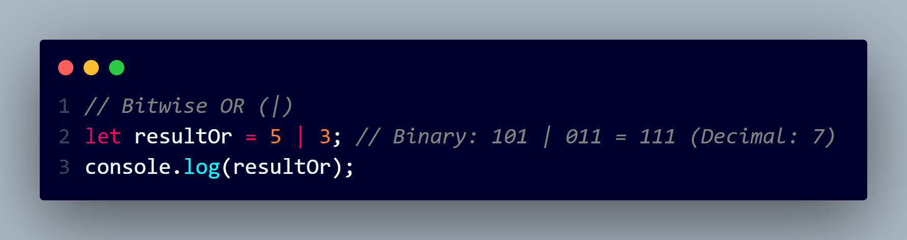
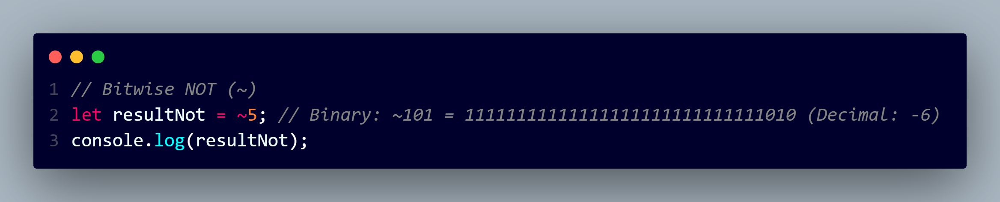
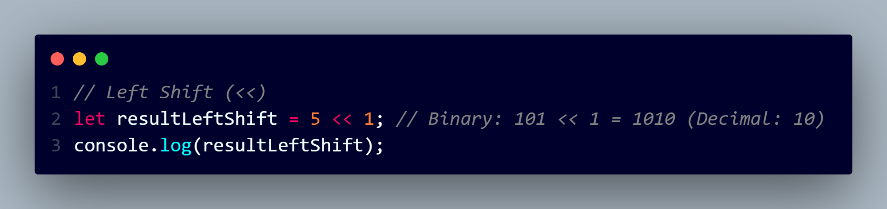
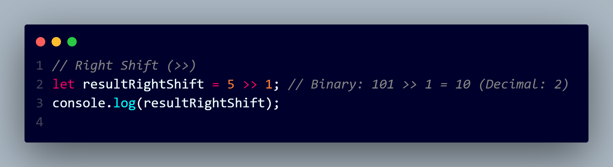

Bitwise AND (&): Sets each bit to 1 if both corresponding bits are 1.
Bitwise OR (|): Sets each bit to 1 if at least one of the corresponding bits is 1

Bitwise XOR (^): Sets each bit to 1 if only one of the corresponding bits is 1.

Bitwise NOT (~): Inverts the bits, changing 1s to 0s and vice versa.

Left Shift (<<): Shifts the bits to the left by a specified number of positions, filling the vacated positions with zeros.

Right Shift (>>): Shifts the bits to the right by a specified number of positions. The leftmost bits are filled based on the sign bit (for signed integers, the sign bit is the leftmost bit).
